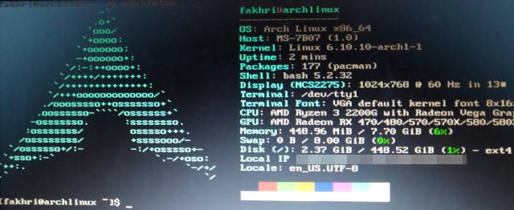

Dulu, aku tidak tahu banyak tentang Linux. Apa yang kutahu tentang Linux adalah ia merupakan sistem operasi, yang sebenarnya salah. Linux itu sebenarnya kernel, dan yang membuatnya sebuah sistem operasi lengkap adalah distribusi Linux. Aku pikir Linux itu lebih tidak nyaman digunakan dibandingkan dengan Windows, dan wah, aku benar dan salah banget!!!!!!! Maaf soal tanda serunya, apakah aku sudah menarik perhatianmu sekarang? Apakah kamu sekarang tertarik membaca postingan ini? Jika ya, bagus. Silakan dibaca :D.
Pada awal kelas 8, atau sekitar akhir kelas 7, saya lupa, aku sangat mendalami perangkat lunak. Aku menemukan bahwa ada situs web yang merekomendasikan banyak software atau layanan yang bersifat open-source dan alternatif open-source untuk software atau layanan yang bersifat proprietary. Aku mencoba berbagai software open-source yang direkomendasikan, dan aku menyadari bahwa sebagian besar yang aku coba memberikan pengalaman yang lebih baik untuk penggunanya--termasuk, namun tidak terbatas kepada kenyamanan pengguna dan kontrol.
Setelah menghabiskan banyak waktu menggunakan software open-source, aku mendapatkan keinginan untuk menggantikan sistem operasiku dari Windows ke Linux. Namun, sebelum kupindah ke Linux, aku meneliti Linux dahulu karena pindah sistem operasi bukanlah hal yang mudah. Jika ingin pindah sistem operasi dengan aman harus backup dulu file-file penting yang dipunyai, dan proses itu merupakan proses yang sangat bergantung kepada berapa banyak file-file penting yang dipunyai--kalau banyak, akan menghabiskan waktu yang lama. Namun, bukan hanya masalah backup saja yang harus dikhawatirkan. Kalau tidak mempunyai mesin yang menggunakan Windows lagi, masalah pekerjaan, sekolah, dan software yang akan digunakan harus dikhawatirkan juga karena banyak juga software-software yang sulit dipakai atau bahkan tidak bisa dipakai sama sekali di Linux.
Setelah itu, aku meminta ibuku untuk membeli flash disk agar aku dapat menginstal Linux ke dalam komputerku. Setelah mendapatkan flash disk yang kuminta, sepertinya aku pikir-pikir lagi tentang pindah sistem operasi, tetapi aku tidak begitu ingat. Aku mencoba untuk membuat bootable flash disk dengan ISO Linux Mint, tetapi tidak bisa. Untungnya aku dapat 2 flash disk, jadi aku coba flash disk yang lainnya, tetapi tidak bisa juga. Aku sadar bahwa flash disk yang kugunakan cacat sehingga aku meminta ibuku untuk membeli flash disk yang baru, tetapi kali ini aku yang memilih. Namun, waktu pengorderannya dan pengiriman flash disknya sempit dengan waktu aku pergi ke kampungku. Saat aku berada di kampungku, flash disknya tiba.
Saat di kampung, aku membaca wiki Arch Linux (salah satu distribusi Linux), terutama cara menginstal Arch Linux. Pada tanggal 15 September 2025, aku pulang ke rumah. Saat di rumah, aku langsung membuat bootable flash disk dari ISO Arch Linux, dan memulai komputerku lewat flash disk yang kutelah membuat bootable dengan ISO sistem operasi Arch Linux. Saat di kampung, aku sadar bahwa proses instalasi Arch Linux lebih mudah daripada yang kukira, tetapi aku masih kurang percaya diri dalam menginstalnya. Maka, aku mengikuti video tutorial instalasi Arch Linux, dan akhirnya aku memulai komputerku dengan sistem operasi terbaruku setelah sekian lamanya menggunakan Windows.
Sekarang, aku akan menyampaikan pendapatku tentang Linux. Apakah Linux lebih baik daripada Windows? Iya dan tidak. Tergantung pemakaiannya. Kalau kamu ingin menggunakan komputermu untuk pekerjaan, lebih baik tinggal di Windows karena banyak aplikasi perkantoran yang lebih baik diakses di Windows atau hanya bisa diakses di Windows. Bukan hanya aplikasi perkantoran saja, tetapi hardware seperti printer lebih baik di Windows karena driver-driver resmi lebih menargetkan pengguna Windows dibandingkan pengguna sistem operasi lain. Bagaimana tentang hal gaming? Sekarang, gaming di Linux lebih mudah karena adanya Wine, lapisan kompatibilitas yang memungkinkan aplikasi Windows bekerja di Linux, dan pertolongan dari Valve (perusahaan Steam) yang membuat Proton, yaitu lapisan kompatibilitas yang memungkinkan game Windows berjalan di Linux. Namun, masih banyak game populer yang tidak bisa dijalankan di Linux, contohnya Valorant, Fortnite, dan sebagainya. Salah satu situs yang memudahkan untuk mengecek keadaan Steam Proton untuk sebuah game adalah ProtonDB. Sekarang, bagaimana untuk sekolah? Sebaiknya jangan pakai Linux. Mengapa demikian? Saya dengar-dengar TKA pakai aplikasi yang sangat ketat dalam keamanan. Kenapa aplikasinya bisa terhubung dengan masalah Linux? Takutnya, keamanan dari aplikasi tersebut bersifat kernel-level, dan Linux terkenal dalam tidak bisa membuka game yang mempunyai kernel-level anticheat, yang berarti bisa jadi pengguna Linux tidak akan bisa membuka aplikasi TKA tersebut.
Apakah Linux sulit untuk digunakan? Bisa mudah dan bisa sulit. Tergantung dengan distribusi Linux yang dipilih. Banyak yang bilang dan merekomendasikan Linux Mint sebagai distribusi Linux termudah dan sebagai distribusi Linux untuk pemula. Sebenarnya, kalau sudah mengerti bagaimana cara kerja sistem operasimu dan bagaimana mengoperasikannya, maka akan tidak sulit, tetapi hal itu memerlukan orang untuk membaca dokumentasi, jadi kira-kira memang bisa dibilang sulit.
Mengapa pakai Linux? Linux lebih bisa dikustomisasi, yang artinya kalau maunya setup yang minimal, bisa. Kalau maunya setup yang lebih fokus ke keyboard untuk navigasi, bisa juga. Kalau mau setup yang indah, enak dilihat, dan mungkin yang dapat diganti-ganti tampilannya tanpa aturan yang ketat? Bisa juga. Linux lebih ringan. Mau menghidupkan kembali laptopmu yang jadul, dan yang mungkin belum digunakan selama bertahun-tahun? Pilihan yang jauh lebih baik daripada Windows. Linux lebih menawarkan kontrol kepada penggunanya, dan menghargai penggunanya. Mau update sistem operasi secara manual, tidak ingin secara otomatis? Bisa saja.
Mengapa jangan pakai Linux? Karena masalah kompatibilitas software yang berdampak kepada pekerjaan, sekolah, dan sebagainya, atau masih nyaman dengan sistem operasi yang sedang digunakan.
Apakah aku senang menggunakan Linux? Tentu. Sekarang tidak ada lagi masalah 100% disk usage, dan update otomatis yang mengganggu kegiatanku saat memakai komputer. Secara keseluruhan, aku nyaman memakai Linux. Tapi apakah kamu harus memakai Linux? Tidak. Pakai atau tidak pakai, itu pilihanmu. Kalau masih nyaman dengan sistem operasi yang digunakan, sebaiknya jangan pindah. Dan saran saya jika ingin pakai Linux, jangan distrohop. Terima kasih.